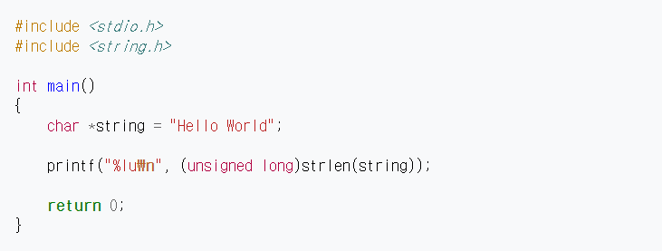

stdlib.h는 C 언어의 표준 라이브러리로, 문자열 변환, 의사 난수 생성, 동적 메모리 관리 등의 함수들을 포함하고 있다.
다음 예제는 Hello World 문자열의 길이를 구해 출력한다. 결과는 11이 출력될 것이다.
string.h는 C 언어의 표준 라이브러리로, 메모리 블록이나 문자열을 다룰 수 있는 함수들을 포함하고 있다. 유니코드 문자열을 다루려면 wchar.h를 사용한다.
| 함수 | 설명 |
|---|---|
| 복사 | |
| void * memcpy ( void * destination, const void * source, size_t num ); | source가 가리키는 곳 부터 num바이트 만큼을 destination이 가리키는 곳에 복사한다. |
| void * memmove ( void * destination, const void * source, size_t num ); | source가 가리키는 곳 부터 num바이트 만큼을 destination이 가리키는 곳으로 옮긴다. |
| char * strcpy ( char * destination, const char * source ); | source를 destination에 복사한다. |
| char * strncpy ( char * destination, const char * source, size_t num ); | source에서 destination으로 처음 num개의 문자들을 복사한다. |
| 병합 | |
| char * strcat ( char * destination, const char * source ); | source를 destination뒤에 붙인다. |
| char * strncat ( char * destination, char * source, size_t num ); | source에서 destination뒤에 처음 num개의 문자들을 붙인다. |
| 비교 | |
| int memcmp ( const void * ptr1, const void * ptr2, size_t num ); | ptr1이 가리키는 처음 num바이트의 데이터와 ptr2가 가리키는 처음 num바이트의 데이터를 비교한다. |
| int strcmp ( const char * str1, const char * str2 ); | str1과 str2를 비교한다. |
| int strcoll ( const char * str1, const char * str2 ); | strcmp와 비슷하지만 LC_COLLATE에 정의되어 있는 방식에 따라 해석 된 후 비교한다. |
| int strncmp ( const char * str1, const char * str2, size_t num ); | str1의 처음 num개의 문자를 str2의 처음 num개의 문자와 비교한다. |
| size_t strxfrm ( char * destination, const char * source, size_t num ); | source를 현재 지역 정보에 따라 문자열을 변환한 후 변환한 문자열의 처음 num개 문자를 destination에 복사한다. |
| 탐색 | |
| void * memchr ( const void * ptr, int value, size_t num ); | ptr이 가리키는 메모리의 처음 num바이트 중에서 처음으로 value와 일치하는 값(문자)의 주소를 반환한다. |
| char * strchr ( const char * str, int character ); | str에서 처음으로 character와 일치하는 문자의 주소를 반환한다. |
| size_t strcspn ( const char * str1, const char * str2 ); | str2에 들어있는 문자들 중 str1에 들어있는 문자와 일치하는 것이 있다면 첫 번째로 일치하는 문자까지 읽어들인 수를 반환한다. |
| char * strpbrk ( const char * str1, const char * str2 ); | str1에서 str2에 들어 있는 문자들을 찾아 str2의 문자들 중 str1의 문자들과 첫 번째로 일치하는 문자의 주소를 반환한다. |
| char * strrchr ( const char * str, int character ); | str에서 마지막으로 character와 일치하는 문자의 주소를 반환한다. |
| size_t strspn ( const char * str1, const char * str2 ); | str2의 문자들만을 포함하고 있는 str1의 처음 부분의 길이를 구한다. |
| char * strstr ( const char * str1, const char * str2 ); | str1에서 str2를 검색하여 가장 먼저 나타나는 곳의 위치를 반환한다. |
| char * strtok ( char * str, const char * delimiters ); | str1을 delimiters의 문자들로 분리한다. |
| 기타 | |
| void * memset ( void * ptr, int value, size_t num ); | ptr이 가리키는 메모리의 처음 num바이트를 value값(문자)으로 채운다. |
| char * strerror ( int errnum ); | errnum(보통 errno)을 해석한 뒤 그에 해당하는 에러 문자열의 포인터를 반환한다. |
| size_t strlen ( const char * str ); | str의 길이를 반환한다. |
| 이름 | 설명 |
|---|---|
| 상수 | |
| NULL | 널 포인터의 약어인 상수. 이 상수는 메모리의 어떤 유효한 위치의 개체도 가리키지 않는 포인터 값이다. |
| 형식 정의 | |
| size_t | class="tsecond"sizeof 연산자의 결과값을 나타내는 정수(unsigned int)이다. |